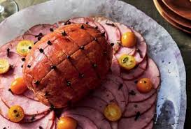
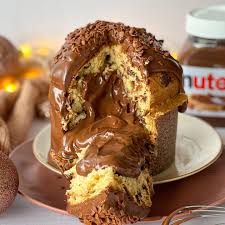

Principais Receitas
Peru: O peru é o símbolo central da ceia de Natal devido ao seu tamanho, que representa fartura, sucesso e a união familiar**, consolidando uma tradição que se popularizou desde as Américas e se espalhou pela Europa.
Tender: O Tender é um presunto suíno defumado e cozido, muito popular no Natal por seu preparo prático, que consiste em pincelá-lo com um molho agridoce (geralmente de frutas cítricas, mel e cravo) para criar uma crosta brilhante e caramelizada.
Chocotone: O Chocotone é a versão brasileira do panetone que substitui as frutas cristalizadas por gotas de chocolate e se popularizou como um pão doce natalino versátil, frequentemente servido puro, ou como base para elaboradas sobremesas recheadas e trufadas.